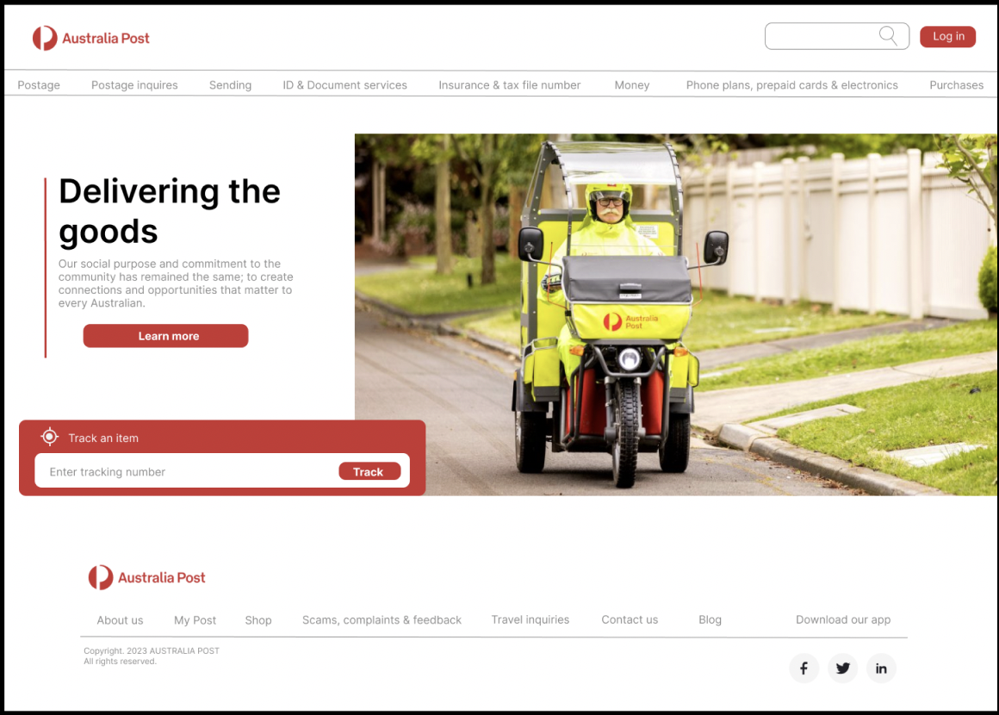
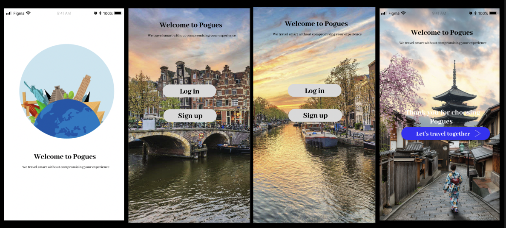

My skills
User Research
I am passionate about translating users' difficulties into valuable information for the team to create a solution. I use empathy and view it from their perspective to understand why this might be an issue for users and how it interferes with their desires and needs. It's important to me that the contexts and insights gather are authentic to produce the best opportunities.
Interaction Design
Considering users' insights is critical when creating purposeful, efficient, effective interactive designs that exceed users' needs and demands. The ability to surpass their expectations will give you an edge in how frequently users interact with your product and leave an impression.
Aesthetics
This design principle is prominent in my projects to enhance functionality and complement design usability. It's essential to captivate users and differentiate our elements to be easily distinguished and recognized.
Empathy
This skill is instilled in me and is something I carry daily and am proud of. I believe it's an important attribute to have to relate and understand each other. It helps us be aware of users' insights, motives, limitations and frustration to deliver an accurate and personable representation of our data.
New Me
NewMe is a calendar mobile app which allows users to set and keep track of their goals whilst also providing a platform for digital journaling.

Australia Post - Government Agency
This project is aimed to understand Government agency users struggles to navigate their website and mobile content and to create a new desktop and mobile design to rectify the struggles.
Pogues - Mobile case study
Develop an app that helps travellers explore budget-friendly travel plans without compromising the value of their experiences.
